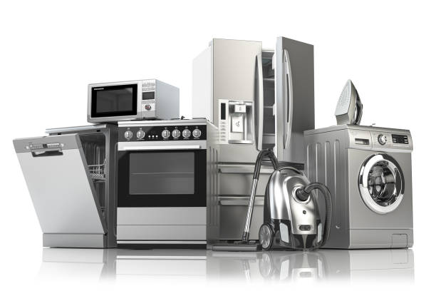
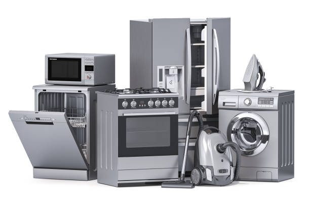
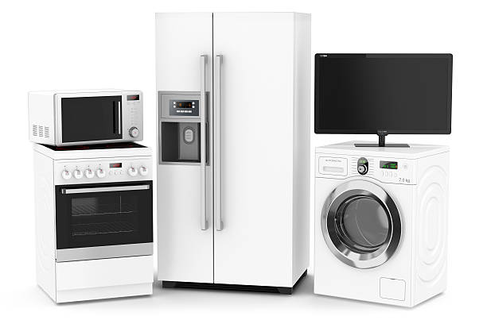
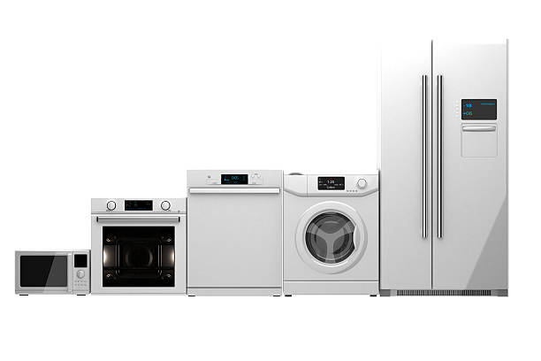

Вся бытовая техника
Бытовая техника делает нашу повседневную жизнь проще и комфортнее. От умных холодильников, которые могут следить за запасами продуктов, до стиральных машин с функцией дистанционного управления, современные устройства экономят наше время и силы. Они не только выполняют свои основные функции, но и становятся стильными элементами интерьера. Бытовая техника — это надежные помощники в создании уюта и удобства в вашем доме.

Встраиваемая техника
Встраиваемая бытовая техника — идеальный выбор для тех, кто ценит стиль и функциональность в интерьере. Такие устройства, как посудомоечные и стиральные машины, духовые шкафы и варочные панели, интегрируются в кухонную мебель, создавая гармоничный и современный облик. Встраиваемая техника экономит пространство, что особенно важно для небольших помещений. Она не только удобна в использовании, но и добавляет изысканности и элегантности в вашу кухню, делая ее более эргономичной и уютной.

Техника для кухни
Техника для кухни — это незаменимые помощники, которые делают кулинарные процессы проще и приятнее. От мощных блендеров и миксеров до многофункциональных кухонных комбайнов и современных кофемашин, каждый прибор создан для экономии вашего времени и усилий. Современная кухонная техника не только облегчает приготовление пищи, но и вдохновляет на создание кулинарных шедевров. С ее помощью ваша кухня превращается в пространство для творчества и наслаждения, где каждый может стать шеф-поваром у себя дома.

Техника для дома
Техника для дома — это основа комфорта и уюта в современной жизни. Пылесосы, системы климат-контроля, стиральные машины и утюги помогают поддерживать чистоту и порядок. Современные технологии делают эти устройства более энергоэффективными и простыми в использовании. С их помощью дом становится местом отдыха и расслабления, где можно наслаждаться каждым моментом. Домашняя техника — это не просто устройства, а надежные помощники, которые улучшают качество повседневной жизни, оставляя больше времени для важных и приятных дел.